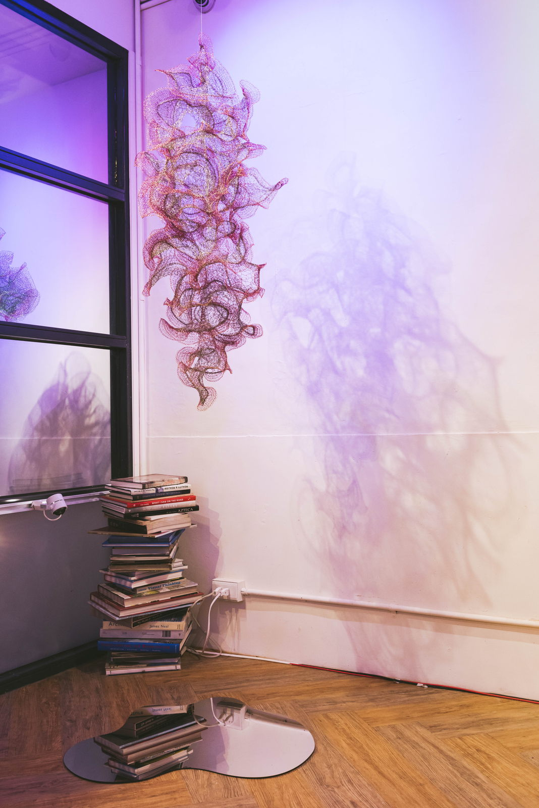
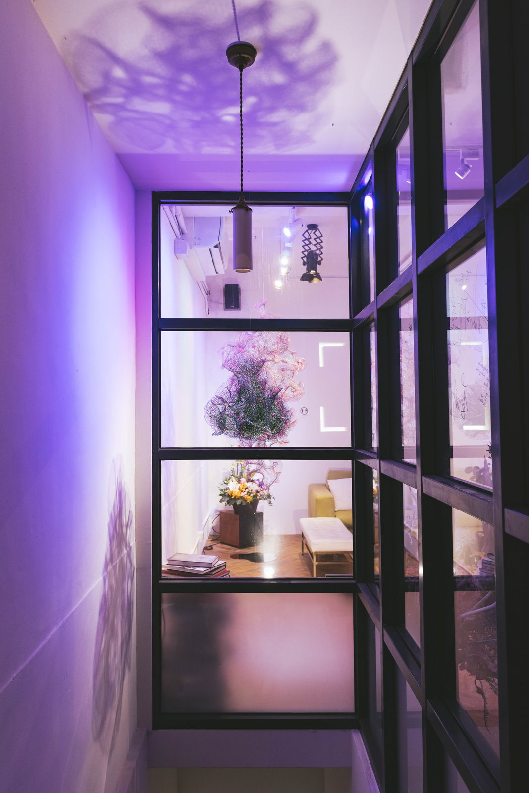
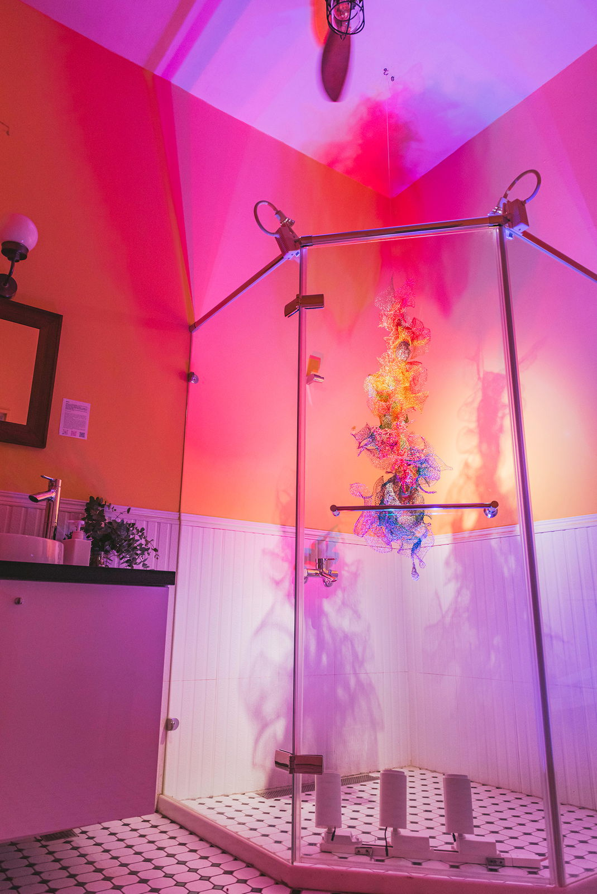
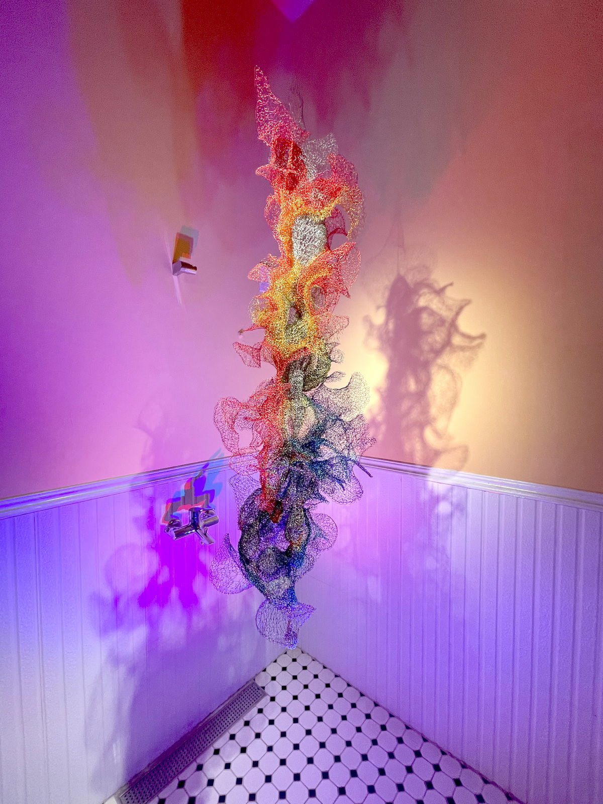
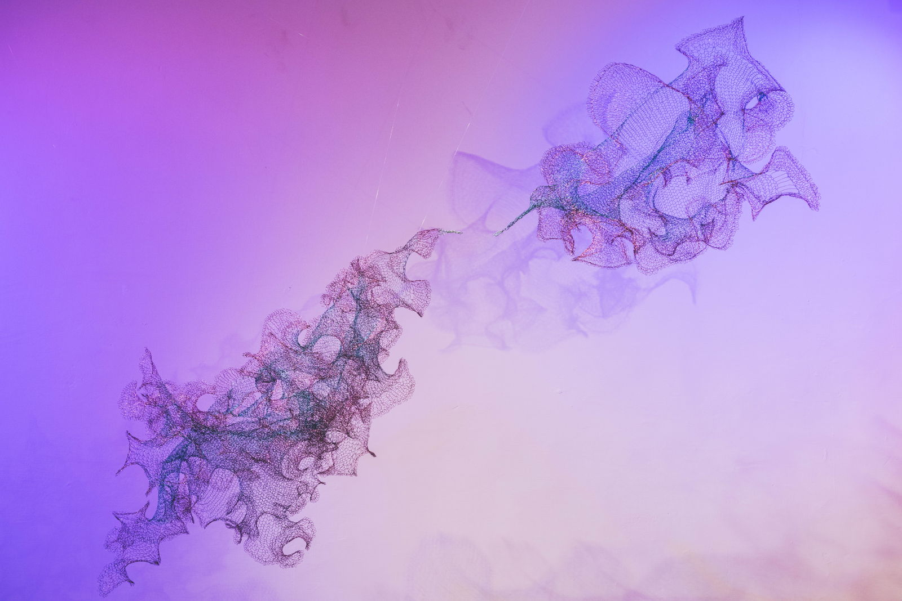
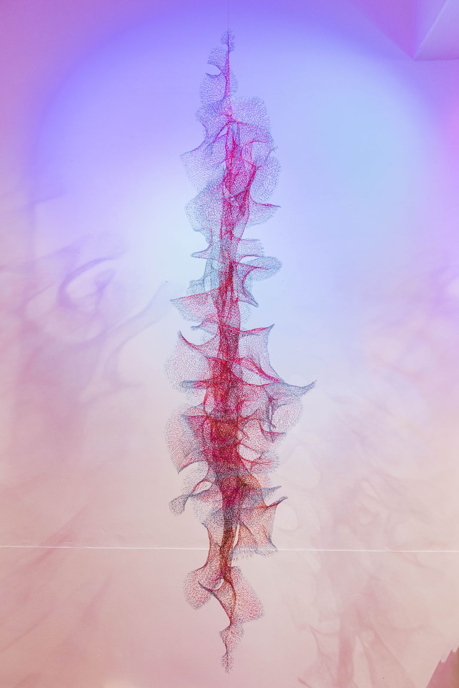
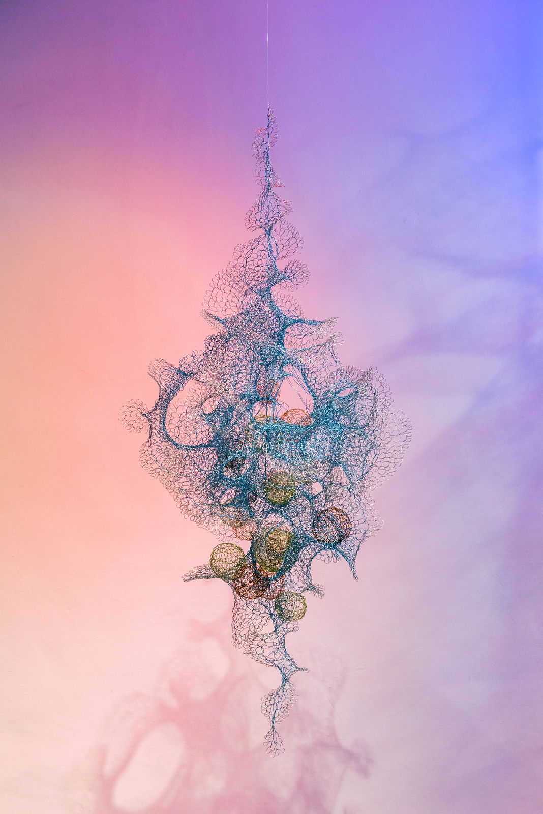
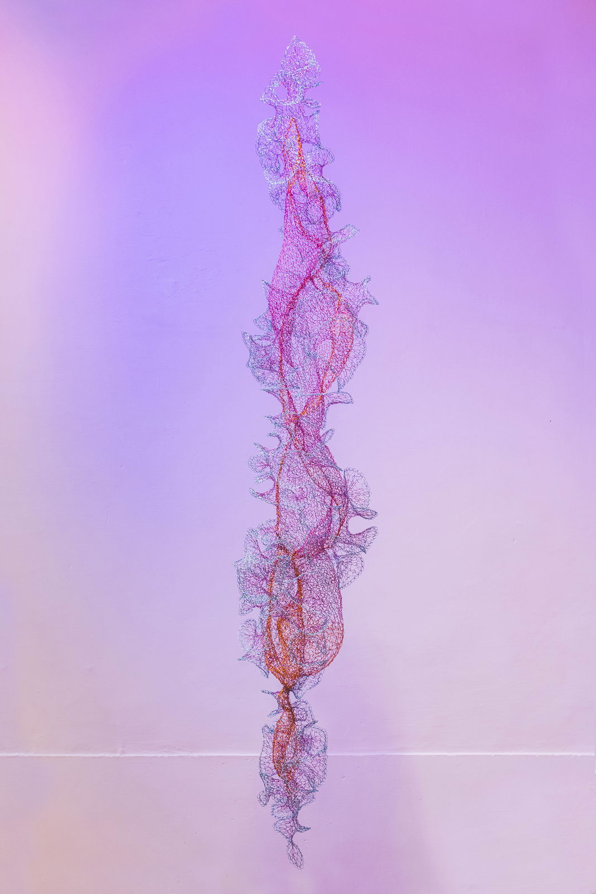
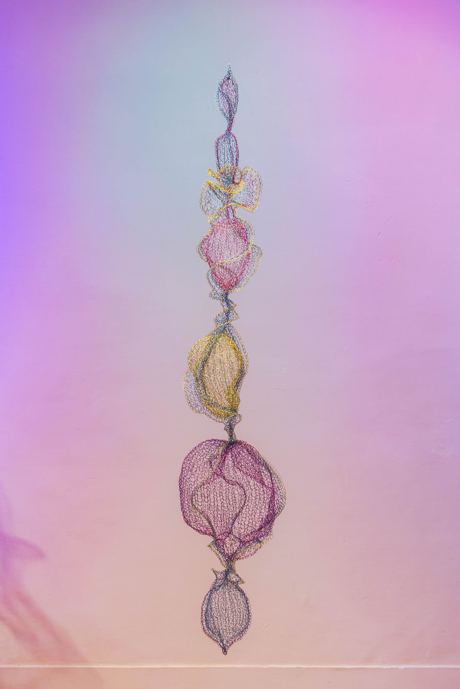
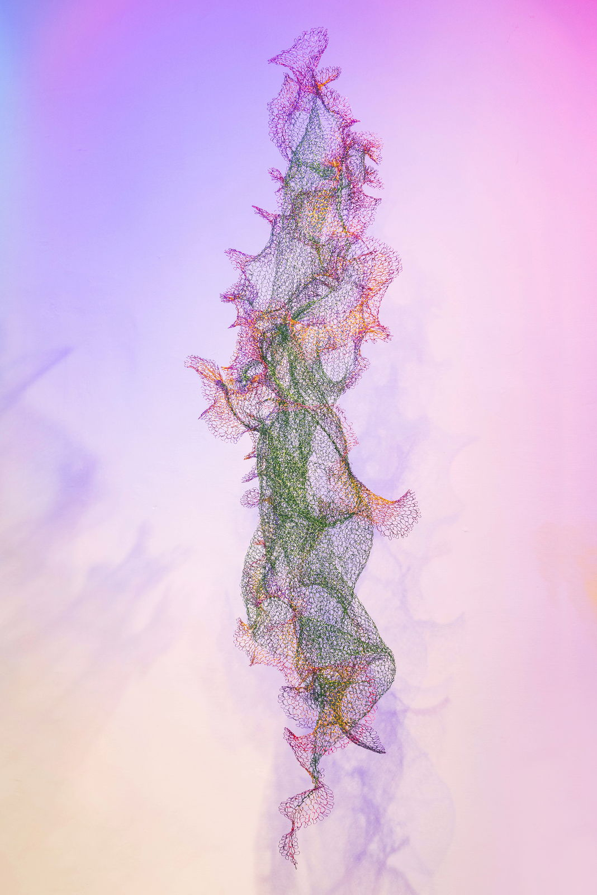
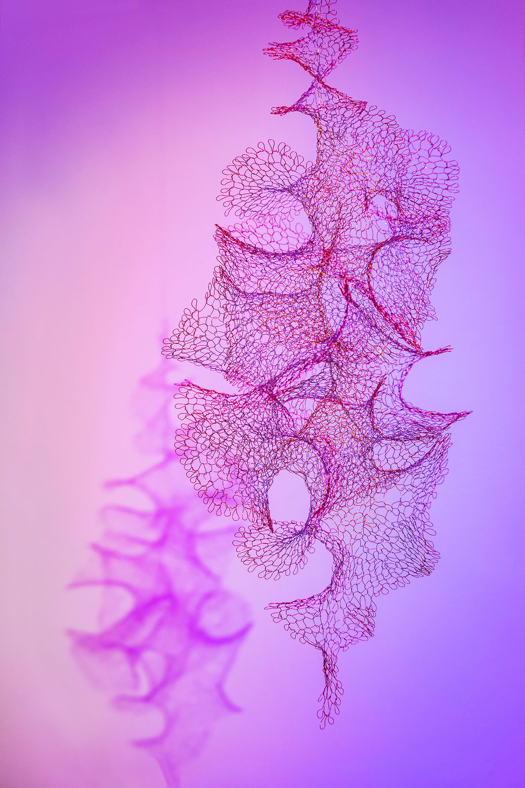
For her solo exhibition Will Looped, Taiwanese artist Julia Hung shifts her gaze inward to question the notion of free will while contemplating the originality of art. Hung often examines social issues in her works, but the pandemic of COVID-19 has confronted her with the changeable nature of life. To find an inner balance, the artist meditates and ponders on the essence of life and art while crocheting enameled copper wire into permeable organic forms. A new body of jewel-like suspension sculptures visualizes her contemplation on the linearity of time and the causality of free will, and reconciling freedom and limitation. Her transcendent world invites viewers to meditate and face uncertainties in life.